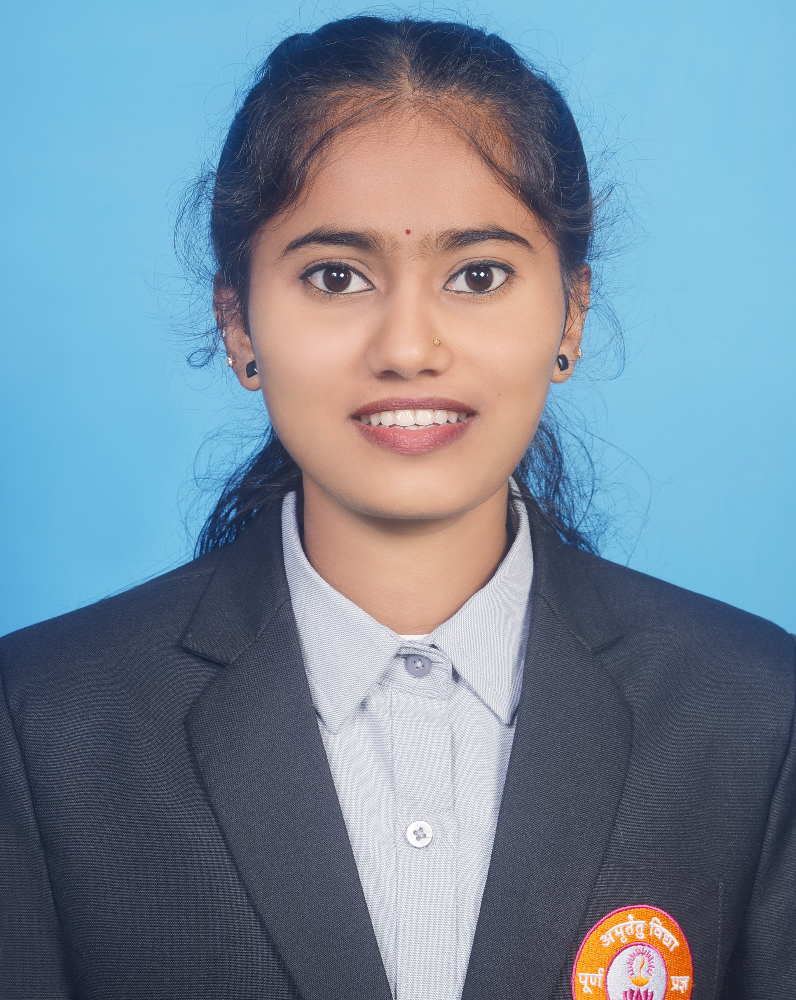

Welcome to my academic profile
Sinchana
MCA Student, Poornaprajna Institute of Management, Udupi
Aspiring software developer pursuing a Master of Computer Applications, with interests in web development, databases and problem solving.

MCA · 2025–2027Currently pursuing
BSc · 2025Undergraduate degree
3+ projectsAcademic and personal
A journey connecting learning, code and creativity
Academics
Coursework in programming, data structures, DBMS, operating systems and software engineering.
View education →Projects
Hands-on work in web apps, databases and mini-projects built during the programme.
Explore projects →About Me
I am a Master of Computer Applications student at Poornaprajna Institute of Management, Udupi. I enjoy turning ideas into working software and am keen to grow through internships, research and collaborative projects. Replace this paragraph with your own story, goals and what drives you.
Education & Experience
MCA – Master of Computer ApplicationsPoornaprajna Institute of Management, Udupi · 2025 – PresentCurrent CGPA :7.62
BSc – Bachelor of ScienceBhandarkars' Arts And Science College Kundapura, 2022 – 2025 CGPA: 8.26.
Projects & Research
Skills & Learning
Achievements & Interests
Certification or awardswayam · 2026
Hackathon / seminar / paperEvent · YearOne-line detail.
Hobby or extracurricularMusic
Contact
Email: sinchanapoojary2807@gmail.com
Phone: +91 7795084345